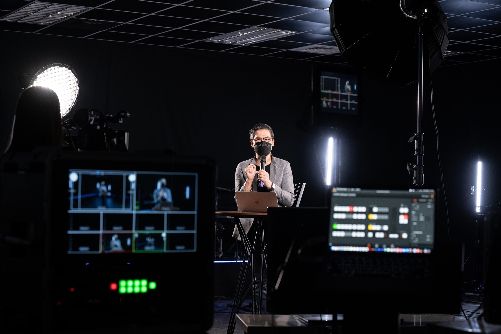

面對疫情所帶來的變動與限制，和平教會相信，神的真理永不改變，
神的作為永不受限，基督徒亦不能停止聚會，我們仍要「來到主前，建造教會」！
為了幫助弟兄姊妹穩定參與崇拜，與小組、教會緊密連結，在疫情期間，
和平教會開始進行「實體＋線上崇拜」，並且無論是實體或線上，對於「主日聚會的經營」，
都有一定的講究與不可動搖的理念，
盼望弟兄姊妹能一齊朝著同樣的異象、站在相同的根基上，一同建造教會！
而在疫情嚴峻、無法有五人以上的崇拜時，教會開始錄製線上崇拜影片，從錄製場地設備的預備，
到開場宣召、讚美敬拜、奉獻、報告、信息、呼召禱告…每一個流程，皆不馬虎，扎實經營建造，
並將內容剪輯為完整的崇拜影片，在週末於教會YouTube頻道推播。
我們不僅製播線上崇拜影片，也教導弟兄姊妹：即使參與線上崇拜，也不單獨一人聚會。而是以小組為單位，
一同透過視訊軟體參與線上崇拜，崇拜後仍持續的彼此分享與代禱，經營肢體生活。
此外，教會也透過小組長和影片來傳遞與教導大家，以正確的態度參與線上崇拜，將時間、空間環境、心思意念、
分別出來，在服裝儀容、金錢奉獻、線上設備等各方面也都要預備好，摒除令自己分心的事物，
在線上經營聚會，建造教會。
